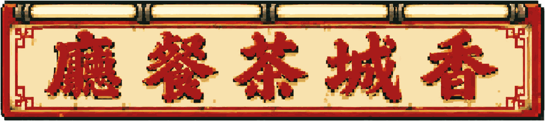

第一日返工？先做「僱員培訓」，師傅一步步教你帶位、落單、煮嘢、沖奶茶。每學識一個位，老闆獎 $300 俾你裝修！
第一日返工
間舖等緊你。企面落單、廚房炒餸、水吧沖奶茶、收銀找錢，你都做得。
學完老闆有利是，自己間舖、關卡、組隊會慢慢開放。
做邊個位？
返邊更？
級數
做法
老闆目標
每更兩個鐘，壓縮成三分鐘。做錯嘢會少收錢，等太耐啲客會嬲走。伙記、廚房、水吧、收銀 · 原型 v1.33
食緊煙
撳「開工！」個鐘先開始行
二點正 · 午市完